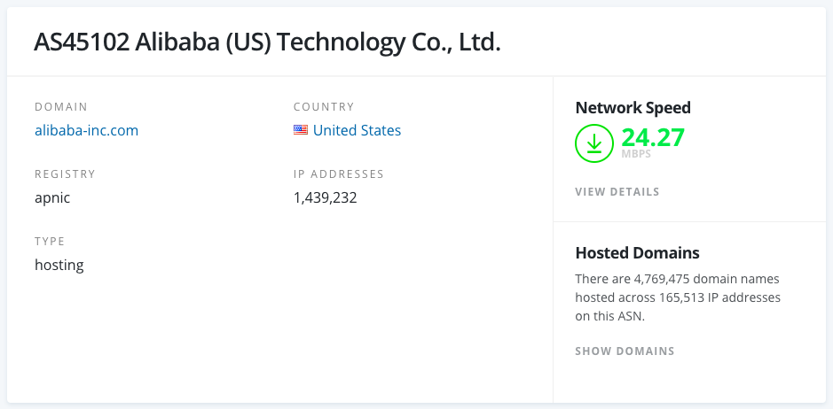

via 春潮频道；
本文隶属于 科学上网 分类，点击分类名称可以查看更多相关文章；
申明：纯技术白话文整理说明，本博客以及本博主推荐大家使用机场服务用于学习，交流技术或爱好，例如YouTube/instagram/Github/谷歌学术/Pornhub（该站适度浏览有益，强撸灰飞烟灭）等世界著名社交/媒体平台；
原标题：知其然，知其所以然：机场是什么？所谓SS/SSR/V2Ray/Trojan机场以及IPLC/BGP/GIA/中转/ASN/原生IP/公网/内网/落地是什么？
I. 主理人说
疫情爆发；闲来无事，被迫摸鱼，如你所知（全国性的）；抽空收集及整理了一下关于机场各方面的白话文技术信息，大部分资料来自阿里云帮助文档以及公开的互联网档案信息。害，看了很久，似乎也没什么特别有趣的。(然后这篇文章应该会持续更新，以弥补某些技术背景空白。
作为普通用户，机场知识适当了解有益，不必强行补全。花里胡哨 BGP/IPLC/IEPL，用着舒心就可以了。
以上。
SS/SSR/V2ray协议以及相应的软件支持可参考：
II. 机场是什么
飞机场/机场：巨佬以及巨佬的TECH们利用VPS/服务器（Anycast 全球/ aliyun 全球/linode/vultr/CHOOPA/各种IDC/HKT/AZURE/CHT/CN2/PCCW/NTT/HKBN/NOVOSIBIRSK(泛指数据中心在某地理区域的服务器)/OSAKA(泛指数据中心在某地理区域的服务器)/HGC/DIX/HINET/WEBARENA/CTM/COGENT/COGENT GIA/RAKSMART...）等一切技术手段搭建科学上网服务：例如VPN/SS/SSR/V2ray/Trojan（后面兴起的新型协议或改良协议），因为最开始使用的ss客户端图标是飞机（小火箭），所以流行起了这个说法，不过这个较为原始的软件已经很少用了。现在较为流行的，如Clash/Quantumultx/Surge之类的软件，非常个性化；
机场的流行：以前还有GAE，FQrouter(特别好用)，影梭等；现如今，封锁越发严重，想上个网特别不易：一则个人单独搭建FQ服务成本较为昂贵，找人分摊难；二则技术维护周期长，有技术层面的要求；
III. 常见机场术语
机场常见术语。
IV. 什么是广域网和局域网？
广域网：又称外网、公网。是连接不同地区局域网或城域网计算机通信的远程网。通常跨接很大的物理范围，所覆盖的范围从几十公里到几千公里，它能连接多个地区、城市和国家，或横跨几个洲并能提供远距离通信，形成国际性的远程网络。广域网并不等同于互联网。
局域网：又称内网。是指在某一区域内由多台计算机互联的计算机组。局域网可以实现文件管理、应用软件共享、打印机共享、工作组内的日程安排、电子邮件和传真通信服务等功能。局域网是封闭型的，可以由办公室内的两台计算机组成，也可以由一个公司内的上千台计算机组成。在阿里云，相同地域下的ECS实例可以采用同类型网络配置实现内网互通，不同地域的ECS实例之间的内网隔离。
V. 中继/中转/落地
中继（中转/端口转发)，即两个或多个服务器之间通过端口进行流量转发。例如YouTube上的内容透过国外服务器，通过端口转发传送至国内服务器，再到用户手上；我们常见的节点例如沪美，沪日，沪韩等等，其中沪为国内服务器所在地，即上海，美为所在地为美国的服务器（例如 kirino 美国）。
机场落地一般是指海外服务器（ISP），如 kirino，HKT/HKBN/HGC，Hinet中华电信（Anycast 全球/ aliyun 全球/linode/vultr/CHOOPA/各种IDC/HKT/Hinet/AZURE/CHT/CN2/PCCW/NTT/NOVOSIBIRSK等等；一般机场会基于以下几个地区或国家选择落地服务商，常见的如香港，美国，新加坡，日本，台湾，这也是大家在代理软件中看节点信息时最常见的IP所属地。
国内入口选在哪呢？ 一般为上海，广州，数据透过入口，再从上海，广州传到各位手上。
VI. UDP/TCP 协议及请求转发
UDP 用户数据报协议（英语：User Datagram Protocol，缩写：UDP；又称用户数据包协议）是一个简单的面向数据报的通信协议，位于OSI模型的传输层。该协议由David P. Reed在1980年设计且在RFC 768中被规范。典型网络上的众多使用UDP协议的关键应用在一定程度上是相似的。
TCP 传输控制协议（英语：Transmission Control Protocol，缩写：TCP）是一种面向连接的、可靠的、基于字节流的传输层通信协议，由IETF的RFC 793定义。在简化的计算机网络OSI模型中，它完成第四层传输层所指定的功能。用户数据报协议（UDP）是同一层内另一个重要的传输协议。
在因特网协议族（Internet protocol suite）中，TCP层是位于IP层之上，应用层之下的中间层。不同主机的应用层之间经常需要可靠的、像管道一样的连接，但是IP层不提供这样的流机制，而是提供不可靠的包交换。
应用层向TCP层发送用于网间传输的、用8位字节表示的数据流，然后TCP把数据流分割成适当长度的报文段（通常受该计算机连接的网络的数据链路层的最大传输单元（MTU）的限制）。之后TCP把结果包传给IP层，由它来透过网络将包传送给接收端实体的TCP层。TCP为了保证不发生丢包，就给每个包一个序号，同时序号也保证了传送到接收端实体的包的按序接收。然后接收端实体对已成功收到的包发回一个相应的确认信息（ACK）；如果发送端实体在合理的往返时延（RTT）内未收到确认，那么对应的数据包就被假设为已丢失并进行重传。TCP用一个校验和函数来检验数据是否有错误，在发送和接收时都要计算校验和。
via 维基百科
UDP转发 会关注这个的（UDP转发），一般是希望通过代理服务器打游戏的；最新版的SS及SSR都默认开启了UDP转发，DUCK不必担心。PC 用户可以参考下面这篇文章中 SStap/NETCH部分（开源游戏加速工具），它们可以很好的配合你玩游戏：
VII. FullCone（游戏加速）
VIII. Cloud Connect 云连接物理专线
Cloud Connect 云连接是什么

云连接（Cloud Connect）能够提供一种快速构建跨区域VPC及云上多VPC与云下多数据中心之间的高速、优质、稳定的网络能力，帮助用户打造一张具有企业级规模和通信能力的全球云上网络； via 云连接；
IX. AIA（Anycast）腾讯公网加速

阿里CEN拔线后，较受关注的一个理财产品；
Anycast 公网加速 AIA 简介
腾讯云 Anycast 公网加速（AIA） 是一个覆盖全球的动态加速网络，所有客户端都不需要接入漫长的公网，服务不受公网的拥堵、南北问题、运营商故障的影响。公网传输是不可靠的传输，而运营商线路中断导致的不可访问，一般用户只能等待恢复。使用 AIA 后，腾讯云内网专线、运营商网络、腾讯云 POP 点实现网络多路径和多入口，屏蔽单地域和单线路的故障，提高网络稳定性。
via 机场推荐清单；
X. IPLC 中继/中转
一般就是IPLC（点对点的内网专线），我们机场常见的便是阿里云经典内网；所谓走IPLC的就是内网线路了。
其原理就是一台服务器在国外一台服务器在国内，所有的数据都是通过这两台服务器内网传输的。其优势就是不过GFW（所以不会存在被封的情况），因为是内网，防火墙检测不到，所以我们在国内访问的就是国内的服务器，然后国内的服务器走内网传输到国外的服务器帮我们上网，所以其就是就是快，稳定，不会受高峰期影响，但是就是成本高，基本上是按照流量去卖的，所以这种是限制用户流量的。
N3RO为此类；
XI. BGP 中继/中转
还有一些是增加的BGP（就是中转或者叫中继，大陆全网优化），其原理也是国内一台服务器，国外一台服务器，但是与IPLC不同的是走的是公网。但是使用了BGP一后对线路的优化是特别明显的，但是给线路增加BGP服务器是花钱的，这也就增加了成本，所以一般不会给香港这么近的节点增加BGP服务器，而IPLC天生就是两台服务器就是自带中转的，所以访问起来更快。一般有BGP的都会标识出来，因为这也是一个卖点。
MDSS 梦迪机场为此类；
通俗点讲：中国电信 、中国联通、中国移动和一些拥有AS自治域（下文会说）的大型民营IDC运营商就可以通过BGP协议来实现多线互联。
BGP 协议/技术
1.通过BGP可以实现一个IP对应电信、联通、移动、长城、教育网等不同线路的带宽，而不需要服务器端配置多个IP。
2.BGP（边界网关协议）主要用于互联网AS（自治系统）之间的互联，BGP最主要的功能在于控制路由的传播和选择最好的路由。
3.中国网通、中国电信、中国铁通和一些大的民营IDC运营商都具有AS号，全国各大网络运营商多数都是通过BGP协议与自身的AS号来实现多线互联的。
4.使用此方案来实现多线路互联，IDC需要在CNNIC（中国互联网信息中心）或APNIC（亚太网络信息中心）申请自己的IP地址段和AS号，然后通过BGP协议将此段IP地址广播到其它网络运营商的网络中。使用BGP协议互联后，网络运营商的所有骨干路由设备将会判断到IDC机房IP段的最佳路由，以保证不同网络运营商用户的高速访问。所以说BGP是目前全球最好的双线技术。
BGP 线路有什么优势？
1.消除南北访问障碍。由于BGP可以将联通、电信、移动等运营商的线路“合并”，使得中国南北无障碍通讯成为可能。对接入层来说，可使“联通、电信”这类区别消失，更能使一个网站资源无限制的在全国范围内无障碍访问，而不需要在异地部署VPN或者异地加速站来实现异地无障碍访问。
2、高速互联互通。原来，一条线路访问另一线路往往要经过很多层路由，但实现BGP以后就像进入了高速公路。
原来带宽的利用率一般在40%左右，实现BGP后能达到80%以上。因此，原来10M独享带宽的速度，通过BGP只需要5M就可以满足，提升效率的同时也节省了成本。
XII. ASN 自治系统

用于BGP路由中的每个自治系统都被分配一个唯一的自治系统编号（ASN），通常以 AS 开头。 对BGP来说，因为ASN是区别整个相互连接的网络中的各个网络的唯一标识，所以这个自治系统编号非常重要。 互联网地址分派机构将64512到65535的ASN编号保留给（私有）专用网络使用。
例如阿里巴巴的ASN则为 AS45102；编号相关信息可以在 IP.SB 或 bgp.he.net 或 ipinfo.io 查看。
XIII. MPLS（术语）
多协议标签交换（英语：Multi-Protocol Label Switching，缩写为MPLS）是一种在开放的通信网上利用标签引导数据高速、高效传输的新技术。多协议的含义是指MPLS不但可以支持多种网络层层面上的协议，还可以兼容第二层的多种数据链路层技术。
它的价值在于能够在一个无连接的网络中引入连接模式的特性；其主要优点是减少了网络复杂性，兼容现有各种主流网络技术，能降低网络成本，在提供IP业务时能确保QoS和安全性，具有流量工程能力。此外，MPLS能解决VPN扩展问题和维护成本问题。
MPLS属于第三代网络架构，是新一代的IP高速骨干网络交换标准，由IETF所提出，由Cisco、ASCEND、3Com等网络设备大厂所主导。
因特网迅猛发展对IP的承载网提出各种挑战，比如路由问题、QoS保障问题等。网络的发展正向宽带化、智能化和一体化的方向发展。未来的业务以突发性数据业务为主，ATM对其显得效率不足，传输和交换成本较高，而IP又显得能力不足。各种IP与ATM融合的技术如LANE, IPOA, TAG SWITCH等只能解决局部问题。
via 维基百科；
XIV. SD-WAN
zenlayer 也有此类产品；
软件定义广域网络（英语：SD-WAN，来自software-defined networking in a wide area network的缩写），是一系列技术的集合，主要概念是将软件定义网络（SDN）的技术应用在管理广域网络（WAN）。软件定义网络技术使用虚拟化技术，简化资料中心的管理及维运的工作；延伸这个概念，将相关技术应用于广域网络之上，可以简化企业级用户对于广域网络的控管1 。
透过这项技术，公司可以用低成本的网络存取方式，建立起高效能的广域网络。企业因此可以部分或完全替换掉昂贵的私有广域网络技术，例如MPLS。
via 维基百科；
*MDSS 梦迪机场 V3套餐服务器及管理使用了该技术；
XV. zenlayer
Zenlayer是全球边缘云服务提供商。Zenlayer依托全球运营的180+数据中心和13Tbps中坚网络，提供全球边缘数据中心服务、互联网转接服务、裸机云、云连接、CloudWAN和边缘计算等产品和服务，提供全球边缘数据中心服务、互联网转接服务、裸机云、云连接、Cloud WAN和边缘计算等产品和服务。企业通过Zenlayer的软件定义平台可快速提升全球用户体验。 Zenlayer不仅生产标准化的边缘云产品，还提供WOW服务。Zenplayers为客户提供兼顾成本的跨地区方案设计、顺畅通关、快速部署服务。服务的每个环节都力争带给合作伙伴和客户超预期的效果，秉持着“客户至上”的服务理念，践行“使命必达”的企业文化，这就是“WOW服务”
总部位于洛杉矶和上海，北京、杭州、深圳、中国香港、中国台湾、印度和新加坡设有分公司。
XVI. SDN - 软件定义网络
Zenlayer，OVS DPDK 涵盖了此项特性（OpenFlow）；
软件定义网络（英语：software-defined networking，缩写作 SDN）是一种新型网络架构。它利用OpenFlow协议将路由器的控制平面（control plane）从数据平面（data plane）中分离，改以软件方式实现，从而使得将分散在各个网络设备上的控制平面进行集中化管理成为可能 ，该架构可使网络管理员在不更动硬件设备的前提下，以中央控制方式用程序重新规划网络，为控制网络流量提供了新方案，也为核心网络和应用创新提供了良好平台。SDN可以按使用领域分为：SD-WAN, SD-LAN, SD-DC, SDN将人工智能引入到网络系统里来，将是未来几年最热门的网络前沿技术之一。
Facebook与Google都在他们的数据中心中使用OpenFlow协议，并成立了开放网络基金会来推动这个技术。
XVII. OVS DPDK 架构
Open vSwitch有时缩写为OVS，是分布式虚拟多层交换机的开源实现。Open vSwitch的主要目的是为硬件虚拟化环境提供交换堆栈，同时支持计算机网络中使用的多种协议和标准。该项目的源代码是根据Apache License 2.0的条款分发的。
OvS(Open vSwitch)是云计算平台的重要连接组件，为虚拟机提供网络连，被各大云平台，基础设施供应商广泛使用，比如OpenStack, OpenNebula。vSwitch–Virtual Switch(虚拟交换机)，在云环境中扮演交换机的角色，连接VM之间、VM与物理机之间的通讯。
互联网发展风起云涌，行业对网络速率的要求也是直线上升：10G -> 40G -> 100G… 传统的OvS因为性能限制很难跟上脚步。基于这个背景，Intel发布了开源项目DPDK，DPDK可以加速OvS性能，可以让内核OvS的性能提升8~9倍。
via 云环境上的OvS-DPDK VS OvS的Deep Dive；
XVIII. 送中节点

XIX. 怎么选择合适的机场
好的机场，合适的机场，实惠，黑科技等等。大多数时候，机场都是靠口碑传播的，即人传人（武汉肺炎），参阅如下；
via 毒奶的机场推荐清单 查看适合你的机场推荐；
以上。
XX. 附注
版权属于：毒奶
联系我们：https://limbopro.com/6.html
毒奶搜索：https://limbopro.com/search.html
毒奶导航：https://limbopro.com/daohang/index.html本文链接：https://limbopro.com/archives/7696.html
本文采用 CC BY-NC-SA 4.0 许可协议，转载或引用本文时请遵守许可协议，注明出处、不得用于商业用途！